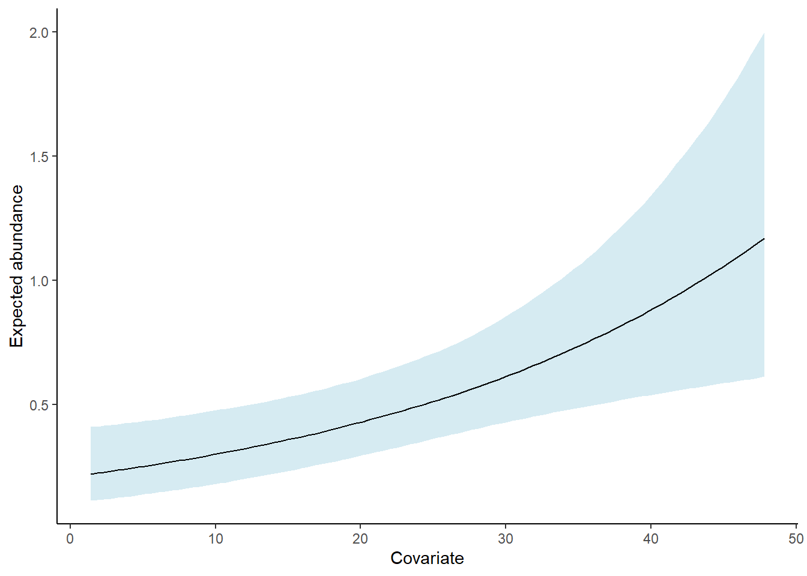

El paquete spAbundance ajusta modelos univariados (es decir, de una sola especie) y multivariados (es decir, de múltiples especies) de mezcla espacial N, modelos jerárquicos de muestreo de distancia y modelos mixtos generalizados lineales utilizando cadenas de Markov Monte Carlo (MCMC). Los modelos espaciales se ajustan utilizando Procesos Gaussianos de Vecino más Cercano (NNGPs) para facilitar el ajuste del modelo a grandes conjuntos de datos espaciales. spAbundance utiliza una sintaxis análoga a su “paquete hermano” spOccupancy (Doser et al. 2022). A continuación, proporcionamos una introducción muy breve a algunas de las funcionalidades del paquete e ilustramos solo una de las funciones de ajuste del modelo. Para obtener más información, consulta los recursos referenciados al final de esta página y la pestaña “Artículos” en la parte superior de la página.
ggplot(mu.plot.dat, aes(x = AreaBasal, y = mu.med)) +geom_ribbon(aes(ymin = mu.low, ymax = mu.high), fill ='lightblue', alpha =0.5) +geom_line() +theme_bw() +labs(x ='Covariate', y ='Expected abundance') +theme_classic()

spOccupancy ajusta modelos de ocupación espacial de especies individuales, múltiples especies e integrados utilizando el método de Monte Carlo por cadenas de Markov (MCMC). Los modelos se ajustan utilizando la técnica de aumento de datos Pólya-Gamma. Los modelos espaciales se ajustan utilizando procesos gaussianos o procesos gaussianos de vecinos más cercanos (NNGP) para conjuntos de datos espaciales grandes. El paquete proporciona funcionalidad para la integración de datos de ocupación de múltiples especies individuales utilizando un marco de verosimilitud conjunta. Para modelos de múltiples especies, spOccupancy proporciona funciones para tener en cuenta las correlaciones residuales entre especies en un marco de modelo de distribución de especies conjuntas mientras se tiene en cuenta la detección imperfecta. A partir de la versión 0.4.0, spOccupancy proporciona funciones para modelos de ocupación de especies individuales de múltiples temporadas (es decir, espacio-temporales). A continuación, proporcionamos una introducción muy breve a algunas de las funcionalidades del paquete, e ilustramos solo una de las funciones de ajuste de modelos. Para obtener más información, consulte los recursos referenciados al final de esta página.